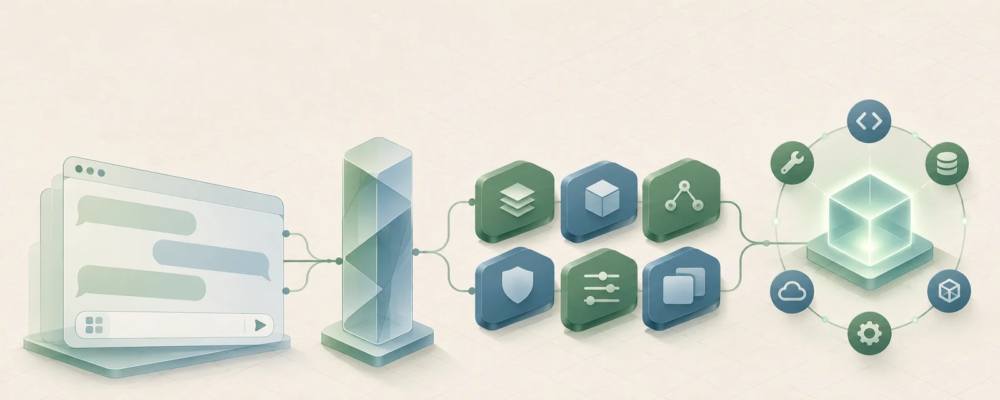

对话 · 文档问答 · 深度研究 · PPT 生成 · Skills。Java 统一接入，Python 组件化能力，独立 Worker 执行。

前端、服务端、技能中心与部署工具在同一仓库维护，运行数据全部落在被 Git 忽略的 data/。
实线为主要调用与数据流，虚线为可选依赖。FastAPI 提供 Vue 构建产物和静态控制台，浏览器通过 Java 入口统一访问。
Worker 离线时就绪检查返回 503，新的 Agent 运行会被拒绝。事件保存在 data/execution.db，支持按游标恢复与回放。
浏览器请求经 Java 统一入口进入，Java 保留上游 HTTP 状态、内容类型与 SSE 事件。
Java 按静态寻址或 Nacos 发现选择 Python 实例，并把恢复游标一起带过去。
能力 API 检查 Worker 状态，向执行队列提交任务或按 run_id 恢复既有运行。
独立进程领取任务，恢复工作区上下文、任务状态与近期交互，进入 Agent 工具循环。
阶段、工具调用与回答事件按序持久化并按游标读取，Java 用虚拟线程持续流式转发。
关键词粗筛 → embedding 召回 → 大模型判定。歧义度超过门闸阈值时先澄清需求，用户作答后作为新一轮对话重新进入级联。
按命中词数量与词长打分。单命中且高置信直接判定，并列或低置信继续向下走。
向量相似度达阈值时直接作为判定层，未达阈值则把候选合并后交给模型。
候选去重后交给模型判定意图，避免单次采样抖动影响结论。
配置决策模型后走 System One 协议，一次前向同时给出意图与诉求歧义度；超阈值发出 clarify 事件，该轮不产出答案。
普通聊天、文件问答、研究、PPT 规划与技能执行共用同一上下文入口，按预算装配输入并记录调用前快照。
模型问答、按需检索、低置信度需求澄清。
文档解析、分块、关键词与向量召回、来源回读。
证据规划、补充检索、联网工具调用与证据整理。
规划内容、渲染演示文稿、登记与下载产物。
按需读取 Skill、调用工具、选择绑定版本。
任务状态、历史摘要、工作区检索与可选长期记忆。
状态、事件、取消、重试、上下文快照。
词面四层：精确 token / trigram / bigram / LIKE 兜底，结果轮转交错。
评测、自进化 patch、五道门禁、灰度绑定与自动回滚。
本机默认地址：应用页面 http://127.0.0.1:8080/，技能控制台 /console，Python 能力 API 端口 8888，前端开发端口 5180。
| 安装依赖 | uv sync · npm --prefix frontend install · npm --prefix frontend run build |
|---|---|
| 本地启动 | npm start —— 拉起 Java 统一入口、FastAPI 能力 API 与 Execution Worker |
| 开发模式 | npm run dev —— Vue HMR，联动启动 Java、FastAPI 与 Worker |
| 配置来源 | 根目录 .env（Git 忽略）或 DODO_ENV_FILE 指定的本地配置 |
| 验证命令 | python -m compileall python_backend · python skill-center/test_center.py · npm --prefix frontend run build |
收集、整理与复用提示词，让经过验证的好 Prompt 随时可查、持续积累。